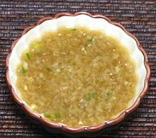

|
Ginger Sauce for DippingLaos - (Jail King) | Viet - (Nuoc Mam Gung) | ||||
| Makes: Effort: Sched: DoAhead: |
3 ounces * 15 min Best |
This dipping sauce is also often used for chicken, and as an ingredient. It can vary in hotness, sweetness and sourness, and can be made vegetarian by doubling the Soy Sauce - or, see Comments. | |||
|
|
2
4 2 2 3 3 1-1/2 |
in
cl t T T T |
Ginger Root
Garlic Thai Chili (1) Sugar (2) Fish Sauce (3) Soy Sauce Lime Juice |
Make - (15 min + mature)
|